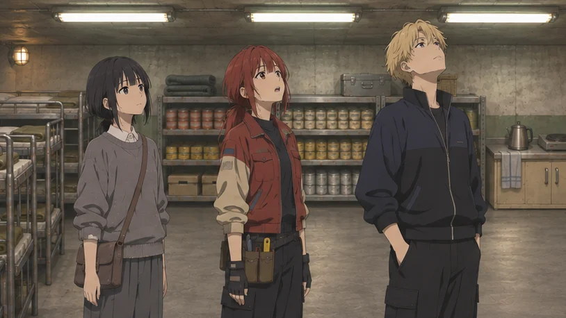

仮題
あらすじ
確定 2026年11月15日に月真猫さんが了承した版です。

未決定の問い
月真猫さんに決めていただくことです。選択肢は Claude の案で、ほかの答えでももちろん構いません。お答えは、ここに書き込まなくても、チャットでお伝えいただければ反映します。
脚本を固める前に（11月17日までに）
制作に入る前に
提出までに
脚本（下書き）
提案 台詞・動き・秒数・旧作素材の選び方は、すべて Claude の案です（2026年11月15日）。あらすじと確定事項は、そのまま使っています。
台詞
【過去】旧『EARTH AFTER』の映像を差し込む（番号は旧作のカット。映像はまだ確かめていません）
【漫画】静止画をパラパラと差し込む
台詞のひらがなとローマ字は、生成用の絵コンテを作る段階で添えます。
確定事項
月真猫さんが決めたことだけを載せています。出典は、どなたがいつ決めたかです。
尺の予算
場面ごとの秒数を入れると、合計と残りが出ます。提案 はじめに入っている場面と秒数は、すべて Claude の案です。自由に書き換えてください。書き換えた内容は、この端末にだけ保存されます。
0:00合計
0:00計画の上限 17:00 まで
0:00公式の上限 20:00 まで
線の位置が十七分です。旧作は計画で十八分三秒でしたが、繋いだ映像は二十分に収まりませんでした。
この場面表を関門に通すと
秒数から計算できる検査だけを、その場で判定します。残りの検査は 判断基準 にございます。
引き継ぎ候補
旧作で決まっていたことのうち、新しい物語で使うかどうかをまだ伺っていないものです。確定としては扱いません。
提案
Claude の案です。採るかどうかは月真猫さんのご判断です。
仮定
まだ決まっていないため、仮に置いている値です。尺の予算の初期値は、この仮定で組んでいます。
裏設定・アイデア帳
チームの雑談や思いつきを、採るかどうかに関わらず残す場所です。物語を縛りません。